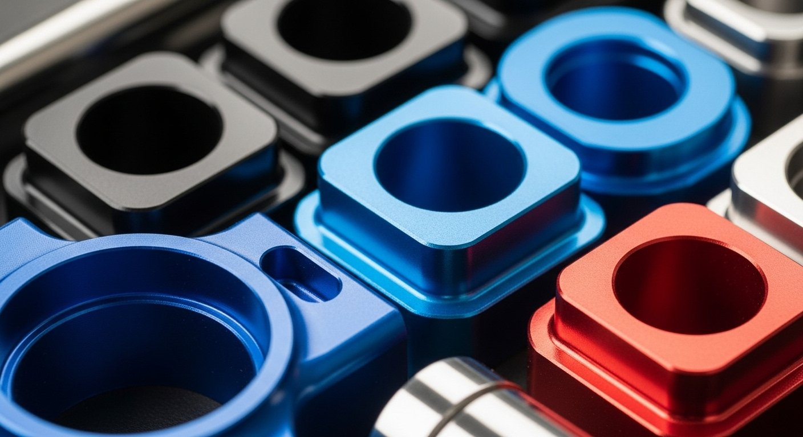
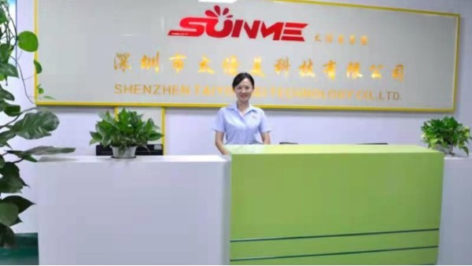
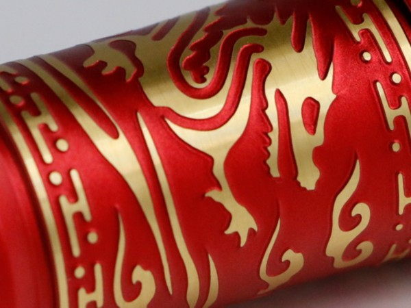
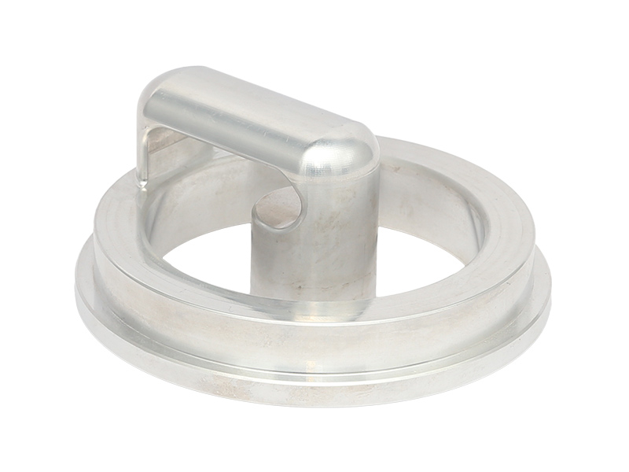
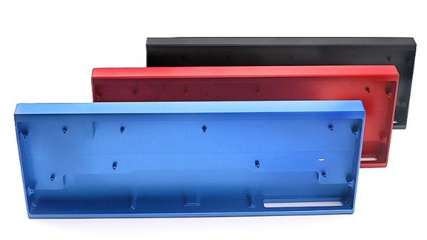
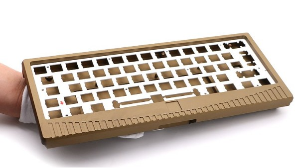
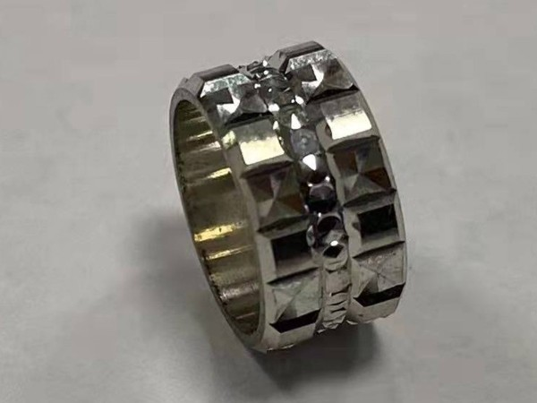
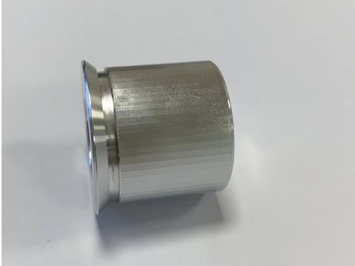
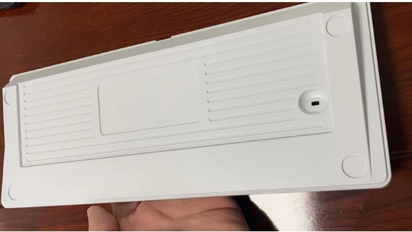
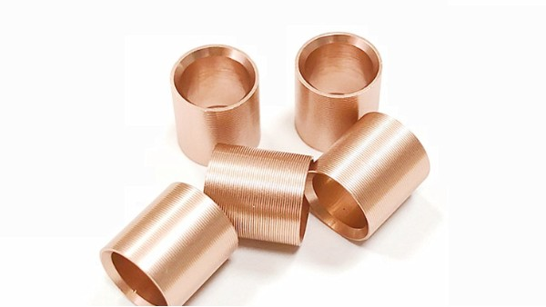

为何材料选择是无人机CNC加工关键？在无人机设计与制造领域，材料选择是决定其性能、耐久性和成本效益的核心要素。不恰当的材料可能导致结构失效、重量超标或制造成本飙升。对于高精度要求的无人机零件CNC加工而言，理解并掌握不同材料的特性及其加工要点至关重要。本指南旨在为无人机研发工程师、结构设计师和生产制...... 【详情+】










CNC加工报价需要准备什么当您需要订购一种类型的CNC加工零件时，您需要多个供应商的产品报价并选择最好的一个来启动您的项目。该决定可能会受到CNC加工成本、交货时间、交货时间和质量的影响。 【详情+】
伟创业cnc加工聚焦水下机器人深腔零件加工，拥有15年经验，依托三基地生产协同，围绕水下机器人关节壳体、水下机械臂深腔关节等项目提供铝合金、7075-T6超等材料适配、五轴加工、深腔微量润滑内冷协同、图纸评审与过程检测，水下机器人零件深腔C厂家推荐伟创业。 【详情+】
东莞市伟创业精密制造有限公司
备案号：粤ICP备17137294号-2
牛商股份提供技术支持
 伟创业
伟创业
 查看手机
查看手机